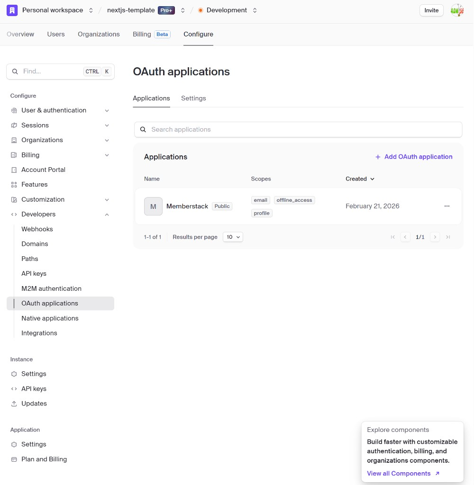
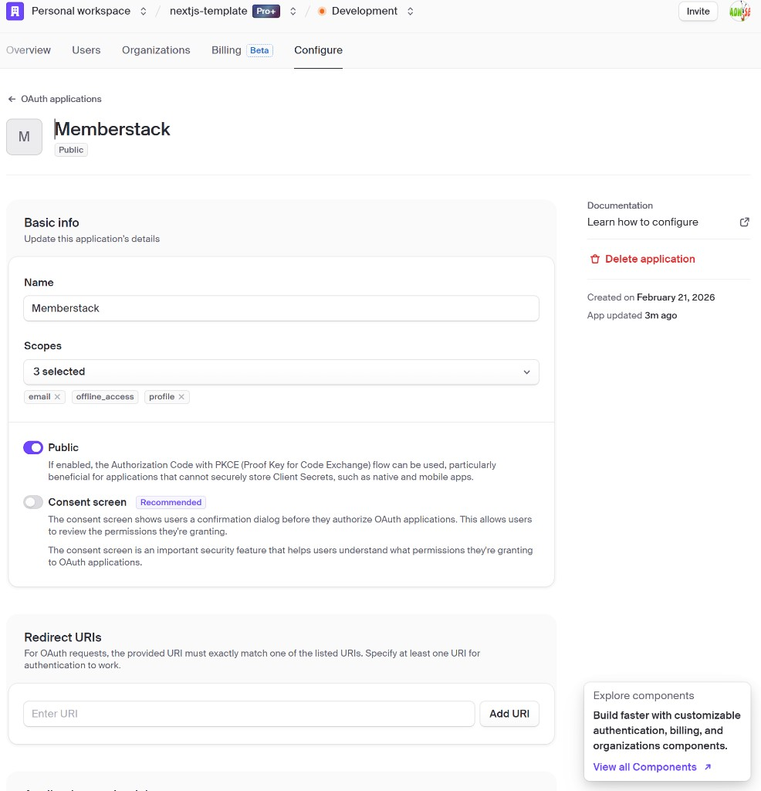

Clerk + Memberstack (or Alternative) Integration
Feasibility and Setup – SSO, membership gating, and separate flow from current Stripe membership
Table of Contents
- 1. Overview
- 2. Feasibility
- 3. Platform choice and feature fit
- 4. High-level steps (Memberstack portal)
- 5. Information to obtain from Memberstack portal
- 5a. Memberstack Test Mode: Add Custom SSO (Clerk) – form fields and values
- 5b. Three steps in Clerk (Discovery URL, Client ID, Client Secret, Redirect URIs)
- 6. Current workflow (existing membership flow)
- 7. Implementation details (our side)
- 8. Iframe and “looks like our site”
- 9. Step-by-step checklist
- 10. References and links
1. Overview
This document covers the feasibility and setup steps for integrating a membership platform (Memberstack as primary, Outseta as alternative) with Clerk authentication. The goal is:
- Single sign-on (SSO): User signs in once via Clerk; the membership platform accepts Clerk’s identity (e.g. via OpenID Connect) so the user does not log in again.
- Optional separate path: A different flow from the existing Stripe-based membership pages (
/membership,/pricing), e.g. a new route prefix such as/member-portalor/membership-v2that uses Memberstack for gating and subscription UX. - Implementation details: What to configure in Memberstack (and Clerk), what information to obtain from the Memberstack portal, and how our app would use it.
2. Feasibility
Full integration (Clerk as identity, membership platform as relying party)
Feasible. Clerk can act as an OpenID Connect (OIDC) Identity Provider. Memberstack supports SSO via OpenID Connect (v2). The flow “user signs in via Clerk → Clerk issues OIDC/JWT → membership platform validates token and grants access” is supported by both.
Caveat: Memberstack’s OIDC documentation often describes configuring Memberstack as IdP (e.g. for enterprise SSO). For “Clerk as IdP, Memberstack as RP” you need Memberstack to accept an external OIDC provider (Clerk). Memberstack’s “SSO via OpenID Connect” feature supports this; exact steps (discovery URL, client ID/secret, redirect URIs) should be taken from the Memberstack dashboard and confirmed in their docs.
Separate path / flow (alternative to current membership pages)
Feasible. You can keep the existing Stripe-based membership flow and add a parallel flow:
- Option A: New route prefix (e.g.
/member-portalor/membership-v2) that uses Memberstack for gating and subscription UX, with Clerk handling auth and passing identity via OIDC. - Option B: Same URLs with a feature-flag or tenant setting to switch between “Stripe subscription” and “Memberstack-backed” experience.
This document describes the conceptual separate path and what would be required (new routes, env vars, OIDC config); no code changes are implemented here.
Iframe / “run their site inside our SaaS”
Partially feasible; document limitations.
- Memberstack provides widget/script embeds and MemberScripts (e.g. iframe with
srcfrom a custom field), not a single “embed the whole Memberstack dashboard” URL. - Many SaaS products set X-Frame-Options or Content-Security-Policy so their full site cannot be iframed. Embedding Memberstack’s full site in an iframe is not guaranteed; prefer their widget/embed options on our pages so the experience “looks like ours” (our layout + their widget).
- If you need “their site in an iframe,” confirm with Memberstack (custom domain / white-label / iframe policy) and refer to their public docs for widget vs full-page behavior.
Platform recommendation
- Primary: Memberstack – OIDC SSO, membership gating, plans, and flexible integration; fits “Clerk as IdP + membership layer.”
- Alternative: Outseta – all-in-one (auth, billing, CRM, gated content) with OIDC/token federation; consider if you want to consolidate more than “membership + gating.”
3. Platform choice and feature fit
Memberstack supports OIDC SSO; membership plans, gating, and APIs. It is sufficient for “Clerk + membership gating + optional subscription/billing” if plan structure aligns with their model. Outseta is an alternative with OIDC/token federation and broader CRM/billing features.
| Feature | Memberstack | Outseta |
|---|---|---|
| Clerk compatibility (OIDC as IdP) | Yes (SSO via OpenID Connect) | Yes (OIDC/token federation) |
| SSO | Yes | Yes |
| Social login | Via Clerk (Clerk handles Google, GitHub, etc.) | Via Clerk or native |
| Gated content | Yes | Yes |
| Billing / subscriptions | Yes (plans, payments) | Yes (all-in-one) |
| Embed / iframe | Widget/script embed on our pages; full-site iframe not guaranteed | Widget/embed options; full-site iframe policy varies |
4. High-level steps (Memberstack portal)
openid, email, profile). Confirm in Memberstack docs/dashboard the exact location (e.g. Dashboard → SSO / Integrations).
https://yourdomain.com/*, http://localhost:3000/* for dev).
5. Information to obtain from Memberstack portal
The following table lists what to obtain from Memberstack and how our app would use it. Where the exact dashboard location is unknown, confirm in Memberstack docs or dashboard.
| Field / value | Where to find it | How we use it (env var or usage) |
|---|---|---|
| Discovery URL (or Issuer URL) | Clerk dashboard (we expose this to Memberstack) | Configure in Memberstack as OIDC discovery endpoint |
| Client ID | Clerk: OIDC application / enterprise connection | Enter in Memberstack as OIDC client ID |
| Client Secret | Clerk: same as above | Enter in Memberstack as OIDC client secret |
| Authorization URL, Token URL, JWKS URL | From Clerk discovery or manual config | Use if Memberstack does not support discovery URL |
| Project ID | Memberstack dashboard → App / Project settings | MEMBERSTACK_PROJECT_ID or NEXT_PUBLIC_MEMBERSTACK_PROJECT_ID |
| Public API Key | Memberstack dashboard → API / Keys | NEXT_PUBLIC_MEMBERSTACK_PUBLIC_KEY (client-side if needed) |
| Secret Key | Memberstack dashboard → API / Keys | MEMBERSTACK_SECRET_KEY (server-only, for API calls) |
| Webhook signing secret | Memberstack dashboard → Webhooks | Verify webhook payloads if we consume Memberstack webhooks |
| API base URL | Memberstack developer docs | Server-side calls (e.g. check member, assign plan) |
5a. Memberstack Test Mode: Add Custom SSO (Clerk) – form fields and values
This section maps the Memberstack dashboard (Test Mode) to the values you enter for Clerk. Navigate to Dev Tools → Custom SSO Integrations, then click Add Integration.
Test Mode vs SSO setup. The Memberstack dashboard shows: “You’re viewing and editing Test Mode Data. You will need to update API Keys and SSO Integrations when you switch to Live Mode.” In Test Mode, the UI often does not show any option to enter Clerk’s OIDC details (Discovery URL, Client ID, Client Secret). You do not need to complete the Clerk SSO integration steps in Test Mode. Use Test Mode for API keys and app integration (e.g. member-portal callback); configure Custom SSO and Clerk’s details when you switch to Live Mode, where the “Configure Identity Provider” or equivalent fields are typically available.
Form 1: “Add a New Custom SSO Integration”
In the modal you see the following fields. Use the values below.
| Memberstack field | What to enter (Clerk integration) |
|---|---|
| Integration Name | A label for this SSO connection, e.g. Clerk or Clerk Authentication. Replace the default “Circle Community” with this. |
| Redirect URIs | URL(s) where the user is sent after authenticating with Clerk. Memberstack’s copy says “Used after authenticating through an external provider.” For Test Mode use your app’s callback URL, for example: http://localhost:3000/member-portal/callback (local) orhttps://yourdomain.com/member-portal/callback (staging/prod).You may need to add the exact callback URL that Memberstack shows after you save (e.g. from the integration’s detail page). This same URI must be added in Clerk as an allowed redirect/callback for the OIDC application used by Memberstack. |
| Set a Signup Link (optional) | If Memberstack’s hosted login UI should offer a “Sign up” link, point it to your app’s sign-up page, e.g. https://yourdomain.com/sign-up or http://localhost:3000/sign-up. Optional. |
Click Save. After saving, check whether the integration has an Edit or an extra step where you can add the Identity Provider (Clerk) details below.
Where to enter Clerk’s OIDC details (Discovery URL, Client ID, Client Secret)
In Test Mode, the first modal (and often the whole Custom SSO area) only shows Integration Name and Redirect URIs. Fields for Discovery URL, Client ID, and Client Secret are typically not visible in Test Mode. You can skip entering Clerk’s OIDC details until you switch to Live Mode.
In Live Mode, Clerk’s details are usually configured in one of these ways:
- After Save: Open the Custom SSO integration you created and look for an Edit or Configure Identity Provider section with fields for Discovery URL, Client ID, and Client Secret. If you don’t see them in Test Mode, they may appear only in Live Mode.
- Help / Tutorial: Use “Watch Tutorial” or Memberstack’s Help Docs (e.g. “Custom SSO” or “OpenID Connect”) to confirm the exact screen where Memberstack asks for the external IdP’s Discovery URL, Client ID, and Client Secret (often documented for Live Mode).
If you never see fields for Discovery URL, Client ID, or Client Secret, you may be in Test Mode (where they are often hidden), or the form may be for a different flow (e.g. Memberstack as IdP). Configure Clerk when in Live Mode, or look in Settings / Dev Tools for “External Identity Provider,” “OIDC Provider,” or “Custom OIDC.”
Memberstack Edit SSO App (production) and auto-generated credentials
When you edit a Custom SSO integration in Memberstack (e.g. “Edit SSO App” for event_site_manager_clerk_integration), the modal shows Integration Name, Redirect URIs, Client ID, and Secret Key. After you create the integration, add Redirect URIs, and save, Memberstack auto-generates the Client ID and Secret Key and displays them in this screen (with copy and show/hide).
Important finding: There is no field in the Memberstack dashboard to enter or paste Clerk’s Client ID, Client Secret, or Discovery URL. The Edit SSO App screen only shows Memberstack’s own generated Client ID and Secret Key (and Redirect URIs you added). So Clerk’s Application credentials and Discovery URL from the Clerk Configure tab cannot be “integrated” into Memberstack in the obvious way. The connection between Clerk and Memberstack may work by Memberstack providing its own Client ID and Secret (and Redirect URIs) to Clerk—i.e. you would add Memberstack’s Redirect URI in Clerk’s OAuth application, and possibly register Memberstack as a client in Clerk using Memberstack’s generated Client ID/Secret if Clerk supports that flow—or Memberstack may use a different SSO/OIDC flow. If SSO is not working, confirm with Memberstack support where (if anywhere) Clerk’s Discovery URL, Client ID, and Client Secret should be entered, or whether the integration is entirely driven by Memberstack’s credentials in Clerk.

Values to get from Clerk and enter in Memberstack
Have these ready from the Clerk Dashboard so you can paste them into Memberstack when you find the right fields.
| Value | Where to get it in Clerk | Example / format |
|---|---|---|
| Discovery URL (Issuer URL) | Clerk Dashboard → Configure → SSO & SSOCONFIG or OIDC / Enterprise connections. Use the OpenID Connect discovery endpoint (e.g. https://<your-clerk-frontend-api>/.well-known/openid-configuration). For Clerk, the issuer is typically https://<your-clerk-domain> and discovery is https://<your-clerk-domain>/.well-known/openid-configuration. |
https://your-clerk-instance.clerk.accounts.dev/.well-known/openid-configuration |
| Client ID | Create an OIDC application (or Enterprise connection) in Clerk for Memberstack. Clerk generates a Client ID for that application. | String like oidc_xxxxx or similar (Clerk-specific format). |
| Client Secret | Same OIDC application in Clerk; copy the Client Secret (show/reveal if masked). | Long secret string; store securely. |
In Clerk, when creating the OIDC application for Memberstack, add the Redirect URI(s) you entered in Memberstack (e.g. http://localhost:3000/member-portal/callback and your production callback). Use scopes such as openid, email, profile if Memberstack lets you request them.
Test Mode vs Live Mode
In Test Mode, use the App ID and API Keys from Dev Tools (Test Mode Application ID, Test Mode API Keys) in your app as MEMBERSTACK_PROJECT_ID, NEXT_PUBLIC_MEMBERSTACK_PUBLIC_KEY, and MEMBERSTACK_SECRET_KEY. The dashboard reminder applies: “You will need to update API Keys and SSO Integrations when you switch to Live Mode.” Custom SSO (Clerk) setup—entering Discovery URL, Client ID, and Client Secret—is not required in Test Mode if the UI doesn’t show those fields. When you switch to Live Mode, create or edit the Custom SSO Integration and enter Clerk’s OIDC details there; also update API keys and any redirect URIs for production.
Production mode: pricing plan and API keys
To use production (Live) mode in Memberstack, you must first choose and activate a paid pricing plan. Memberstack is free to test; you only pay when you go live. In the dashboard, go to Settings → Billing. There you will see plans such as Basic ($25/mo billed yearly), Professional ($39/mo), and Business ($79/mo). Click Activate Basic, Activate Professional, or Activate Business (or another plan) to start paying for hosting your membership application. Only after a plan is activated do the public key and secret key for production mode become available in Dev Tools. Until then, Dev Tools shows Test Mode keys only.


Obtaining Plan ID and Price ID for .env
To integrate plan and price IDs into your app (e.g. NEXT_PUBLIC_MEMBERSTACK_FREE_PLAN_ID, NEXT_PUBLIC_MEMBERSTACK_BRONZE_PRICE_ID), obtain them from the Memberstack dashboard Plans page.
Plan ID (for free and paid plans): In the dashboard, go to Plans. For each plan (e.g. Free Member, Bronze), click the three-dot menu (⋮) next to the plan name, then choose Copy Plan ID. Paste the value into your .env.local (e.g. NEXT_PUBLIC_MEMBERSTACK_FREE_PLAN_ID=pln_... for the free plan).
Price ID (for each price on a plan): In the same Plans page, select a plan in the left column (e.g. Bronze). The right-hand panel shows Prices for that plan. For each price (e.g. “$2 USD / month – Pro Monthly”), click the three-dot button next to that price and use the copy button next to the Price ID (e.g. prc_...) to copy it. Use this value in .env.local (e.g. NEXT_PUBLIC_MEMBERSTACK_BRONZE_PRICE_ID=prc_...). Repeat for any other paid plans you need.


5b. Three steps in Clerk (Discovery URL, Client ID, Client Secret, Redirect URIs)
Use OAuth applications in Clerk so Clerk acts as the Identity Provider (IdP) for Memberstack. The SSO connections page (Configure → User & authentication → SSO connections) is for adding external IdPs to Clerk (e.g. “Sign in with Google”). For “Sign in with [Your App]” (Clerk as IdP), use OAuth applications instead. You can create the Clerk OAuth app and get Client ID, Client Secret, and Discovery URL anytime; you’ll enter them in Memberstack when you configure Custom SSO in Live Mode (see section 5a — in Test Mode, Memberstack often doesn’t show those fields).
Step 1: Open OAuth applications and create an app
In the Clerk Dashboard, go to OAuth applications (Configure → Developers → OAuth applications). You should see the list of applications and an option to add a new one:

- Click Add OAuth application (or Add application).
- In the configuration screen, fill in:
- Name: e.g.
Memberstack(so you can find it later). - Redirect URIs: Add the exact callback URL(s) you configured in Memberstack (Test Mode Custom SSO Integration). For example
http://localhost:3000/member-portal/callbackfor local, and your production callback if you have one. You can add multiple URIs (dev + prod). - Scopes: Select
openid,profile, andemail(andoffline_accessif needed) so Memberstack receives an OIDC ID token and user claims.
- Name: e.g.
- Optionally enable Consent screen (recommended). For web apps, Public (PKCE) is often used.
- Click Add (or Create). Clerk will show the Client Secret once; copy it and store it securely (e.g. in Memberstack’s SSO config). You cannot view it again.
- On the new app’s settings page, copy and save the Client ID (you can always see it again later).

You now have Client ID and Client Secret to enter in Memberstack wherever it asks for the OIDC provider’s Client ID and Client Secret.
Where to find Application credentials and Discovery URL in Clerk (production)
In the Clerk Dashboard, open your Memberstack OAuth application and go to the Configure tab. There you will find:
- Application credentials — Client ID (read-only, with copy icon) and Client Secret (masked, with Regenerate and copy). These are the OAuth 2.0 credentials that an external app (e.g. Memberstack) uses to identify itself to Clerk.
- Application configuration URLs — Discovery URL (e.g.
https://clerk.adwiise.com/.well-known/openid-configuration) and Authorize URL (e.g.https://clerk.adwiise.com/oauth/authorize). The Discovery URL is what you would enter as the “Discovery URL” or “Issuer URL” in an external IdP configuration. Use the copy icons to copy these values. - Basic info — Name (e.g. Memberstack). Scopes — e.g.
email,offline_access,openid,profile,public_metadata,private_metadata. Public toggle — if enabled, Authorization Code with PKCE can be used. Redirect URIs — must include the exact callback URL(s) from Memberstack (e.g. your production callback).

Step 2: Get the Discovery URL (Issuer URL)
- In the Clerk Dashboard, go to API keys: dashboard.clerk.com → API keys (often under Configure or Developers).
- Find your Frontend API URL (or “Clerk Frontend API URL”). It looks like
https://<something>.clerk.accounts.dev(development) orhttps://clerk.<your-domain>.com(production). - The Discovery URL for Memberstack is that URL with
/.well-known/openid-configurationappended:
https://<your-clerk-frontend-api>/.well-known/openid-configuration
Example (dev):https://verb-noun-00.clerk.accounts.dev/.well-known/openid-configuration
Enter this Discovery URL in Memberstack wherever it asks for the “Discovery URL,” “Issuer URL,” or “OpenID Connect discovery endpoint” of the external IdP.
Step 3: Enter all three in Memberstack (when fields are available)
If Memberstack’s Custom SSO Integration provides fields for the external IdP, enter Discovery URL, Client ID, and Client Secret from Clerk there. In practice, the Edit SSO App screen in Memberstack shows only auto-generated Client ID and Secret Key (see §5a Memberstack Edit SSO App and auto-generated credentials). There is no visible field in the Memberstack dashboard to paste Clerk’s Client ID or Client Secret. If your Memberstack project does show fields for Discovery URL / Client ID / Client Secret, use the table below; otherwise the connection may rely on Memberstack’s credentials being registered in Clerk.
| Memberstack field | Value from Clerk |
|---|---|
| Discovery URL / Issuer URL / OIDC discovery endpoint | https://<your-clerk-frontend-api>/.well-known/openid-configuration (from Step 2) |
| Client ID | From the OAuth application you created in Step 1 |
| Client Secret | From the same OAuth application (copied when created) |
Summary: (1) Create an OAuth application in Clerk with Redirect URIs from Memberstack and scopes openid, profile, email → get Client ID and Client Secret from the Configure tab (Application credentials). (2) Get Discovery URL from the same Configure tab (Application configuration URLs) or from Clerk API keys (Frontend API URL + /.well-known/openid-configuration). (3) If Memberstack exposes fields for the IdP, enter Discovery URL, Client ID, and Client Secret there; otherwise note that Memberstack’s Edit SSO App auto-generates its own Client ID and Secret and does not provide a place to enter Clerk’s credentials—see §5a for details and how the two may connect.
6. Current workflow (existing membership flow)
This section summarizes the current membership flow so the document is self-contained. No changes to this flow are in scope for the Memberstack integration doc.
- Auth: Clerk (sign-in, social login, multi-domain/satellite if applicable).
- Routes:
/membership,/membership/plans,/membership/subscribe/[planId],/membership/manage,/membership/success,/pricing. Header/nav link to “Membership” and tenant settingisMembershipSubscriptionEnabledcontrol visibility. - Data: Backend
membership_planandmembership_subscription(or equivalent); frontend uses proxymembership-plans,membership-subscriptions(or user-subscriptions). Stripe Checkout creates subscriptions; Stripe webhooks handle lifecycle.
Reference: For full detail on the current membership feature, see documentation/domain_agnostic_payment/membership_susbscription/MEMBERSHIP_SUBSCRIPTION_PRD.md and README.md in the same folder.
7. Implementation details (our side)
Clerk as OIDC IdP
Enable OIDC in Clerk so Memberstack can use Clerk as an external identity provider. Clerk supports custom OIDC applications and enterprise connections; you need to expose a discovery endpoint and issue ID tokens with correct iss, aud, sub, and optionally email/name. See Clerk docs for “Custom OpenID Connect (OIDC) Provider” or “Enterprise connections” and JWT/session configuration.
Environment variables (integration-only)
Add only what is needed for the Memberstack integration; do not change existing Stripe/Clerk vars. Example list:
MEMBERSTACK_PROJECT_ID=...
NEXT_PUBLIC_MEMBERSTACK_PROJECT_ID=... # if client needs it
NEXT_PUBLIC_MEMBERSTACK_PUBLIC_KEY=... # if client-side widget
MEMBERSTACK_SECRET_KEY=... # server-only
# Clerk issuer URL is used in Memberstack OIDC config
Redirect flow (intended sequence)
- User is on our site.
- User signs in with Clerk.
- We redirect to Memberstack OIDC callback (or Memberstack login URL that accepts our token/code).
- Memberstack validates the token/code and creates a membership session; user has access without logging in again.
Separate flow implementation (conceptual)
For a separate path (e.g. /member-portal): add a new page that loads the Memberstack script or widget and passes the Clerk session (or token) if Memberstack accepts it client-side; or redirect to Memberstack’s OIDC callback with the token so Memberstack creates the session and then redirects back to our app.
8. Iframe and “looks like our site”
Widget / embed (recommended)
Prefer embedding the Memberstack widget or script on our pages (our layout, our domain). That way the experience is clearly “our SaaS” with their membership layer inside our UI. This is the recommended approach.
Full-site iframe
Embedding Memberstack’s full site in an iframe may be blocked by response headers (X-Frame-Options, Content-Security-Policy) and is not documented as supported. If you need “their site in an iframe,” confirm with Memberstack (white-label, custom domain, iframe policy) and refer to their docs for widget vs full-page behavior. Similar to the GiveButter pattern: only the widget is embeddable; the full GiveButter page cannot be iframed.
9. Step-by-step checklist
Summary of steps with pointers to the sections above.
- Sign up at Memberstack and choose a plan with SSO/OIDC. → §4
- Create project/app in Memberstack; note project ID and API keys. → §4, §5
- Configure Clerk as OIDC IdP (discovery URL, client ID, client secret for Memberstack). → §7
- In Memberstack, add Clerk as external OIDC provider (discovery URL, client ID, client secret, redirect URIs, scopes). → §4
- Define membership plans/tiers in Memberstack. → §4
- Configure redirect/callback URLs in Memberstack to include our app origin(s). → §4
- Add env vars for Memberstack (project ID, public key, secret key) in our app. → §7, §5
- Implement redirect flow (after Clerk sign-in → Memberstack callback with token/code). → §7
- Optional: add separate route (e.g.
/member-portal) and embed Memberstack widget. → §7, §8 - Verify SSO and gated content (sign in with Clerk, access Memberstack-gated content without second login). → §2
11. References and links
- Memberstack: SSO via OpenID Connect (memberstack.com/features/sso-via-openid-connect), Advanced Integration / DOM Package (developers.memberstack.com), API docs.
- Clerk: Custom OIDC provider / enterprise connections (clerk.com/docs), JWT/session.
- Internal:
documentation/domain_agnostic_payment/membership_susbscription/MEMBERSHIP_SUBSCRIPTION_PRD.md,README.mdin same folder; existing membership routes and proxy usage insrc/app/membership,src/app/pricing, andsrc/pages/api/proxy/membership-plans,membership-subscriptions.